Next: Groups Up: Reference Previous: Wires
Variables may have tensor values, or sets of data. Different tensors are sorted by rank. For example, a tensor of rank 0 may appear as a single number, let's refer to it as 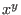. A tensor of rank 1 may appear as a sequence of numbers, let's say 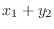. Rank 2 means a tensor appears as a 2D sequence of numbers, for example:
A tensor of rank 3 will appear as a three-dimensional cube, rank 4 as a four-dimensional hypercube, and so on. Two ways of getting tensor values into Minsky are via tensor-valued initial conditions (§4.4.3), or by importing a CSV file into a parameter (§4.4.5). Scalar operations are extended to operating elementwise over tensors, and a number of operations exist for operating on tensors (§4.2).
When two or more tensors are combined with a binary operation (such as addition or multiplication), they must have the same rank. For example, two tensors of rank 2 can be multiplied together, but a tensor of rank 2 and a tensor of rank 3 cannot. They may have differing dimensions, which means the values within each tensor may not necessarily match up 1-to-1 exactly. To understand what happens when a given dimension is mismatched requires understanding the concept of an x-vector.
When Minsky is given tensor values, it sorts the values within each tensor by corresponding dimensions. For example, a rank 2 tensor would have its values sorted into two sets of data. This data can be in the form of numbers, dates (time values), or strings. Minsky will then look at cross-sections of the datasets in order to process the values within. When the dimensions of two tensors match up, for example two rank 2 tensors, the corresponding cross-sections of both tensors should also match up. When they don't, a weighted interpolation of the corresponding values is taken. This involves using an x-vector.
An x-vector is a vector of real values, strings or date/time values. If no x-vector is explicitly provided, then implicitly it consists of the the values 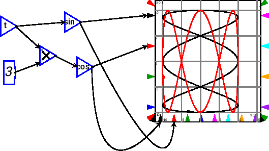, where 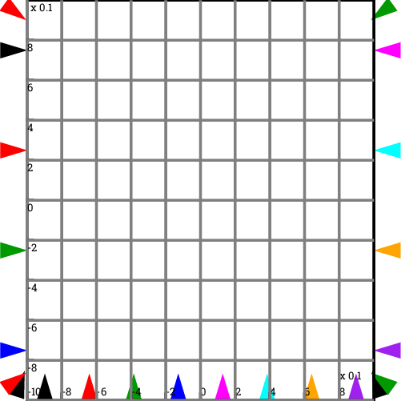 is the dimension size of axis 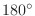 of the tensor.
For example, if the first tensor consists of three elements 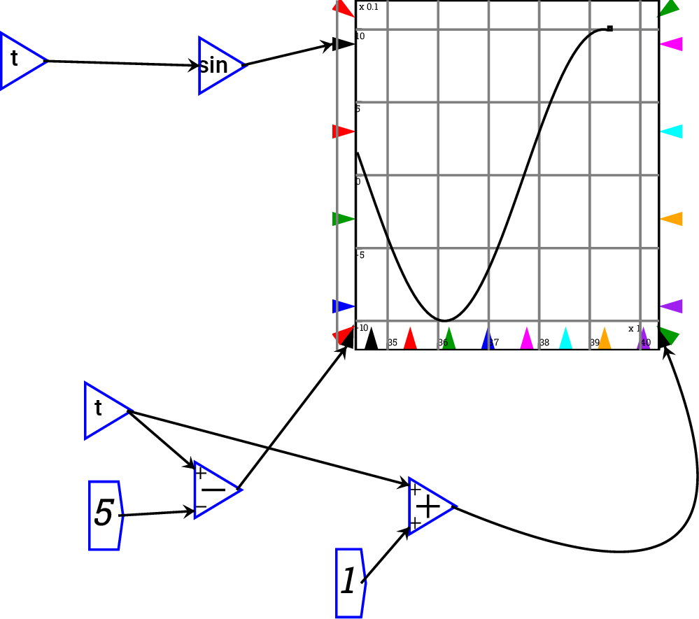 and the second consist of a number of different elements that roughly correspond to the same three elements, these can be added together. The x-vector starts with the first tensor's value of 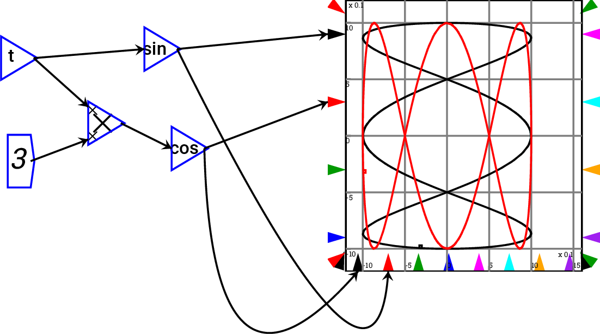 and looks for a matching value in the second tensor. If it can't find a direct match, it will search for nearby values which roughly correspond. It can then take those values and interpolate the corresponding value based on where in the tensor it appears. This is weighted, so say there are four values nearby, the program will average those out and find where a value in the middle of those four values would appear, and what that hypothetical value would be. To take another example:
Suppose the first tensor was a vector 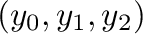 and had an
x-vector (1,3) and the second tensor  had an x-vector
(0,2,3), then the resulting tensor will be
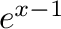. If the x-vector were date/time data, then the tensor values
will be interpolated according to the actual time values. If the first
tensor's x-vector value lies outside the second tensor's x-vector,
then it doesn't result in a value being included in the output. The
resultant x-vector's range of values is the intersection of input
tensors' x-vector ranges.
had an x-vector
(0,2,3), then the resulting tensor will be
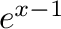. If the x-vector were date/time data, then the tensor values
will be interpolated according to the actual time values. If the first
tensor's x-vector value lies outside the second tensor's x-vector,
then it doesn't result in a value being included in the output. The
resultant x-vector's range of values is the intersection of input
tensors' x-vector ranges.
If both tensor had string x-vectors, then the resultant tensor will only have values where both input tensors have the same string value in their x-vectors. In the above case, where the x-vectors were ('1','3') and ('0','2','3') the resulting tensor will be the scalar 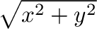.
It goes without saying that the type of the x-vector for each axis must also match.